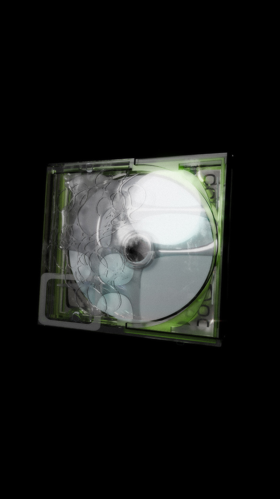
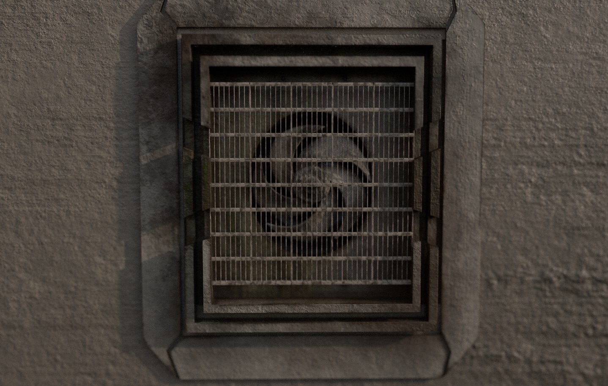
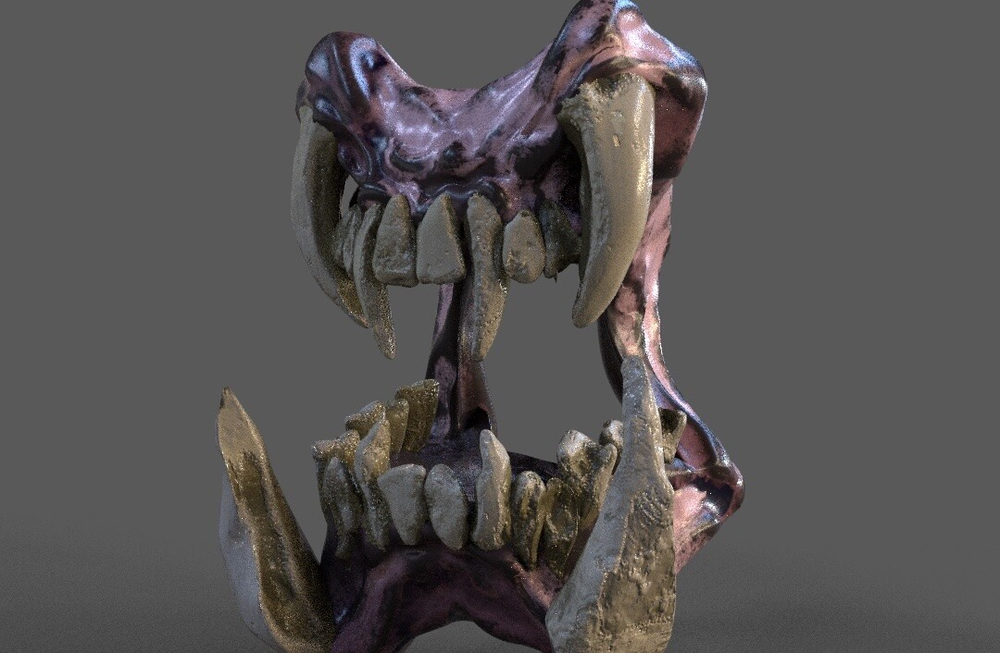

// :: I’m Jewel Lee-Johnson ::) a multidisciplinary artist and 3D designer with a focus on environment art, technical art, game development, audiovisual performance, and creative technology. I’m a graduate of the Rhode Island School of Design (RISD), where I received a BFA in Film/Animation/Video with a concentration in Computers, Technology, and Culture.
My practice explores memory, identity, architecture, and sound, and is heavily influenced by video games, film, and the ways digital and physical spaces can hold narrative, memory, and identity. My aim is to experiment with 3D techniques to expand conventional gaming while staying connected to my community and exploring new ways of representing Black spaces and experiences.
I actively work in spaces with electronic sound and DJing, enhancing my consideration of motion, timing, and atmosphere in 3D space. I’m especially interested in audio-reactive structures that let 3D visuals respond to gameplay, using tools like Wwise, FMOD, Unreal Engine’s Audio Synesthesia, and Pure Data to translate audio into procedural animation, shader changes, particle systems, and lighting shifts. I also work in performance, which helps me explore hybrid workflows that combine Max/MSP and other plugins with Unreal Engine or Unity to support live, real-time experiences.
I want to explore more workflows and collaborations, especially in group gaming projects where I can work in real time with others. I’m also focused on learning more of the technical side of game development, including programming within game engines. I love troubleshooting, which is why audioreactive work is so fun to me; it blends technology and art in creative ways and allows me to make work that feels inventive and innovative.


